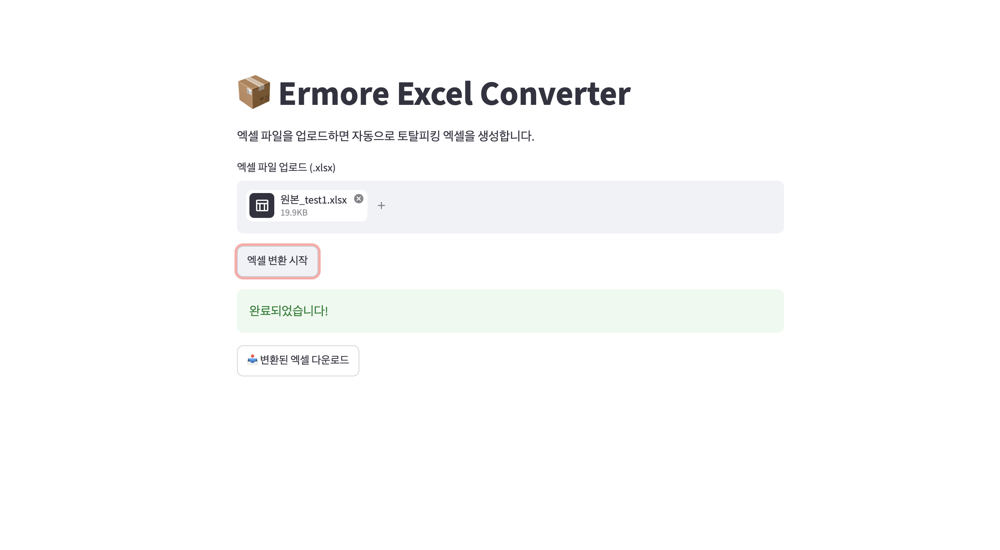
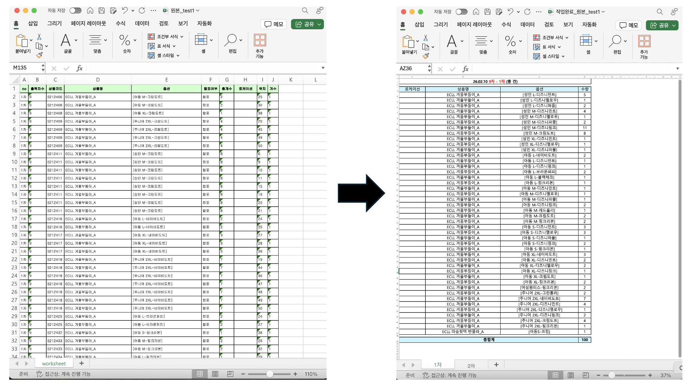

01. Project Overview
본 프로젝트는 반복적으로 수행되는 엑셀 파일 정리 및 변환 업무를 자동화하기 위해 구현한 Python 기반 엑셀 자동화 서비스입니다.
사용자는 웹페이지에 엑셀 파일을 업로드하고, 서비스는 해당 파일을 읽어 필요한 데이터 구조로 변환한 뒤 새로운 엑셀 파일로 생성합니다. 생성된 파일은 사용자가 바로 다운로드하여 업무에 활용할 수 있도록 구성했습니다.
02. Motivation & Goal
Project Motivation
어머니께서 엑셀 파일을 반복적으로 수정하고 정리하는 업무를 수행하시는 과정에서, 같은 형식의 작업을 매번 수작업으로 처리해야 하는 불편함이 있다는 점을 알게 되었습니다.
이러한 반복 작업은 시간이 오래 걸릴 뿐 아니라, 사람이 직접 복사·수정·정리하는 과정에서 실수가 발생할 가능성도 존재합니다. 이에 Python을 활용해 엑셀 파일을 자동으로 읽고, 원하는 형식으로 변환해주는 도구를 만들고자 했습니다.
Project Goal
- 반복적인 엑셀 정리 업무를 자동화하여 작업 시간 단축
- 엑셀 파일 업로드 후 자동 변환 및 다운로드 기능 구현
- Python 기반 데이터 처리 로직 구현
- 비개발자도 사용할 수 있도록 Streamlit 웹 서비스 형태로 구성
- Streamlit Cloud를 통해 외부에서도 접근 가능한 서비스로 배포
03. My Role
Problem Definition
실제 엑셀 업무에서 반복적으로 발생하는 파일 정리 및 형식 변환 문제를 파악하고, 자동화 가능한 작업 단위로 문제를 정의했습니다.
Excel File Processing
Python을 활용하여 업로드된 엑셀 파일을 읽고, 필요한 데이터만 추출하거나 원하는 구조로 재정렬하는 처리 로직을 구현했습니다.
Output File Generation
변환된 데이터를 새로운 엑셀 파일로 생성하고, 사용자가 바로 다운로드하여 업무에 활용할 수 있도록 구성했습니다.
Streamlit Web Service
비개발자도 쉽게 사용할 수 있도록 Streamlit 기반 웹 인터페이스를 구현하고, Streamlit Cloud를 통해 외부에서 접근 가능한 형태로 배포했습니다.
04. Service Workflow
서비스는 사용자가 엑셀 파일을 업로드하면, Python 기반 처리 로직을 통해 파일을 변환하고 새로운 엑셀 파일로 다운로드할 수 있도록 동작합니다.


05. Implementation
본 서비스는 Python을 기반으로 엑셀 파일을 처리하고, Streamlit을 활용하여 웹 인터페이스를 구성했습니다. 로컬에서만 실행되는 스크립트가 아니라, 실제 사용자가 웹에서 접근할 수 있는 형태로 배포한 것이 특징입니다.
Excel Input
사용자가 업로드한 엑셀 파일을 읽어 데이터프레임 형태로 변환했습니다.
Data Transformation
기존 엑셀 구조를 업무에서 필요한 형식으로 자동 변환하는 처리 로직을 구성했습니다.
Excel Output
변환 결과를 새로운 엑셀 파일로 생성하고, 다운로드 가능한 형태로 제공했습니다.
Web Deployment
Streamlit Cloud를 통해 외부 사용자가 접근 가능한 웹 서비스로 배포했습니다.
사용 기술
- Python: 엑셀 파일 처리 및 변환 로직 구현
- Pandas: 엑셀 데이터 읽기, 정리, 변환
- OpenPyXL 또는 Excel Writer: 엑셀 파일 저장 및 다운로드 파일 생성
- Streamlit: 파일 업로드, 변환 실행, 다운로드 UI 구성
- Streamlit Cloud: 웹 서비스 배포
06. Result
프로젝트 결과, 반복적으로 수행되던 엑셀 파일 정리 과정을 자동화하여 사용자가 직접 파일을 수정하지 않고도 원하는 형식의 엑셀 파일을 생성할 수 있도록 구현했습니다.

반복 업무 자동화
수작업으로 처리하던 엑셀 형식 변환 과정을 Python 로직으로 자동화했습니다.
사용자 접근성
Streamlit 웹페이지에서 파일 업로드와 다운로드만으로 사용할 수 있도록 구성했습니다.
파일 출력
변환된 결과를 새로운 엑셀 파일로 생성하여 실제 업무에 바로 활용할 수 있도록 했습니다.
서비스 배포
Streamlit Cloud를 통해 외부에서도 접근 가능한 서비스로 배포했습니다.
07. Service Link
배포된 서비스는 아래 링크에서 확인할 수 있습니다.
배포 서비스 보기 →08. Source Code
엑셀 파일 업로드, 데이터 변환, 새로운 엑셀 파일 생성 및 다운로드 기능을 구현한 프로젝트 코드는 아래 GitHub 저장소에서 확인할 수 있습니다.
GitHub Repository 보기 →